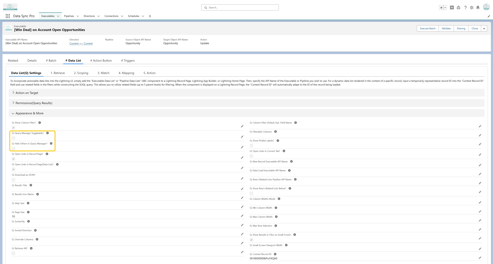

<article>
    <p>
      Check <strong>"Q: Query Manager Toggleable?"</strong> to allow users to toggle the 
      Query Manager and modify the query using an intuitive UI for adjusting filters, sorting, 
      and selecting fields. Additionally, enable <strong>"Q: Hide Others in Query Manager?"</strong> 
      to hide the <strong>"Other"</strong> section in the Query Manager for a more 
      focused user experience.
    </p>
  </article>
  
  